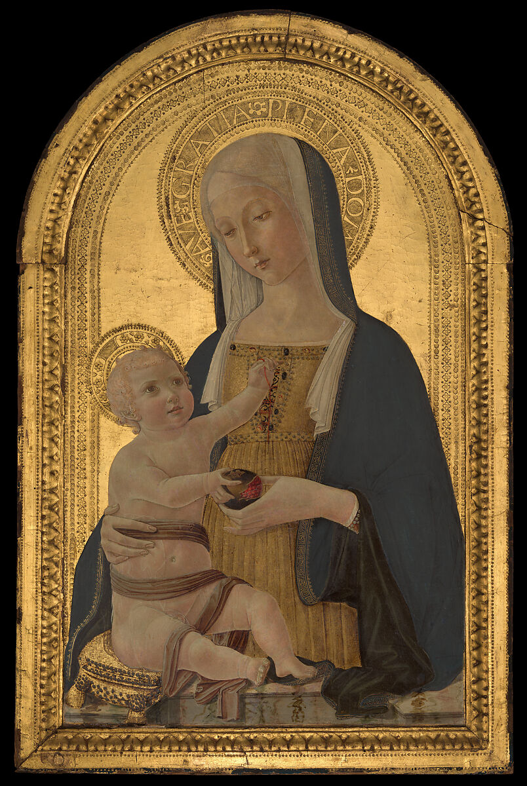
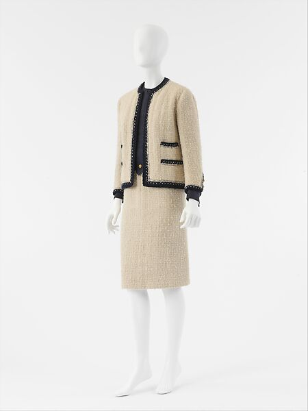
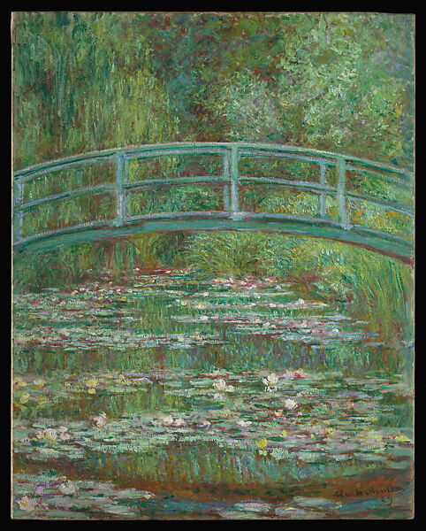
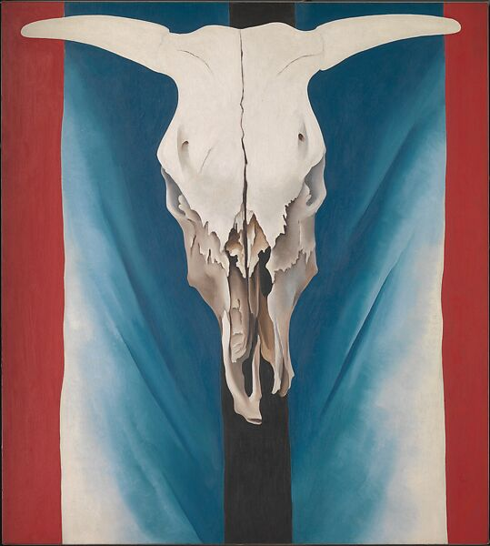
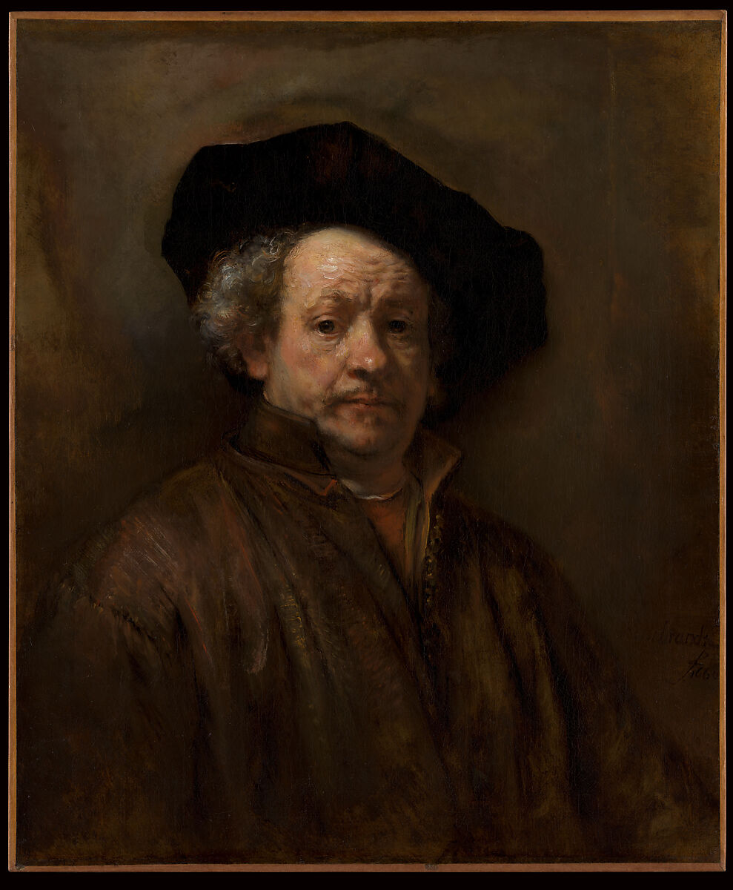
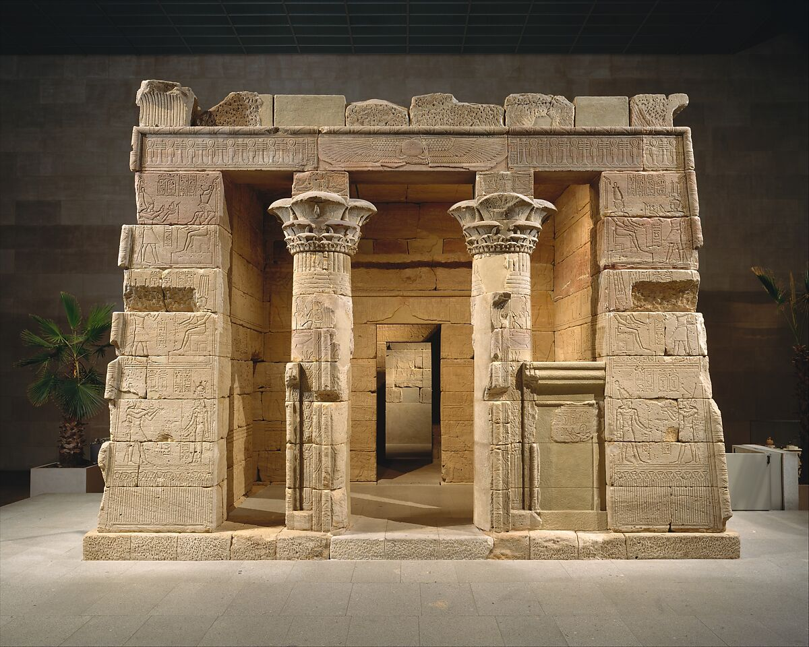
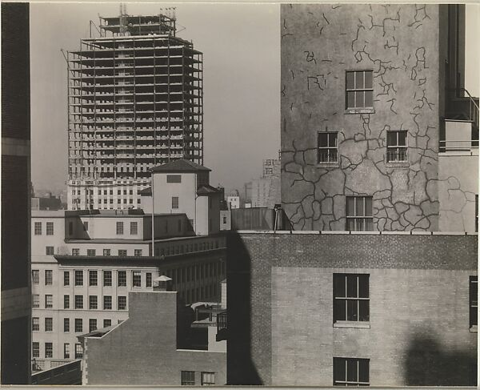
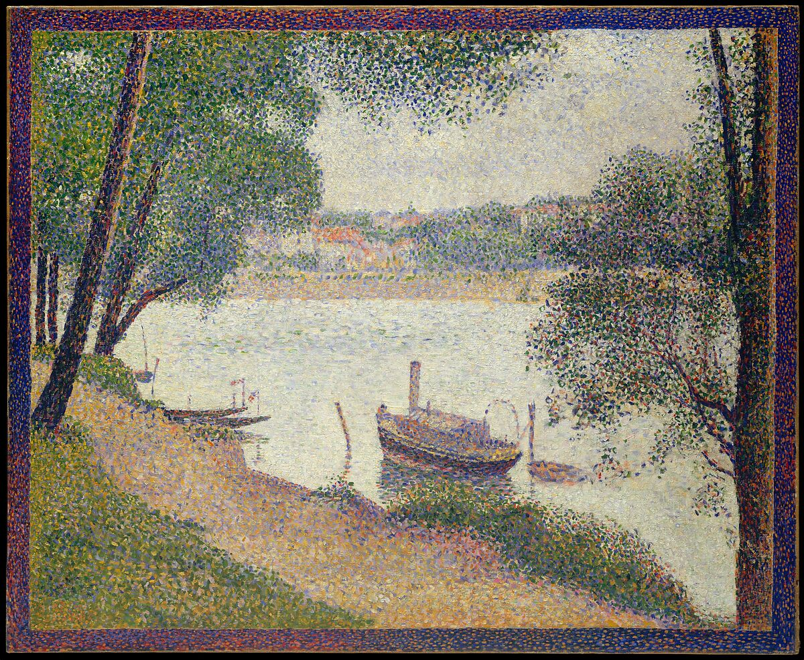
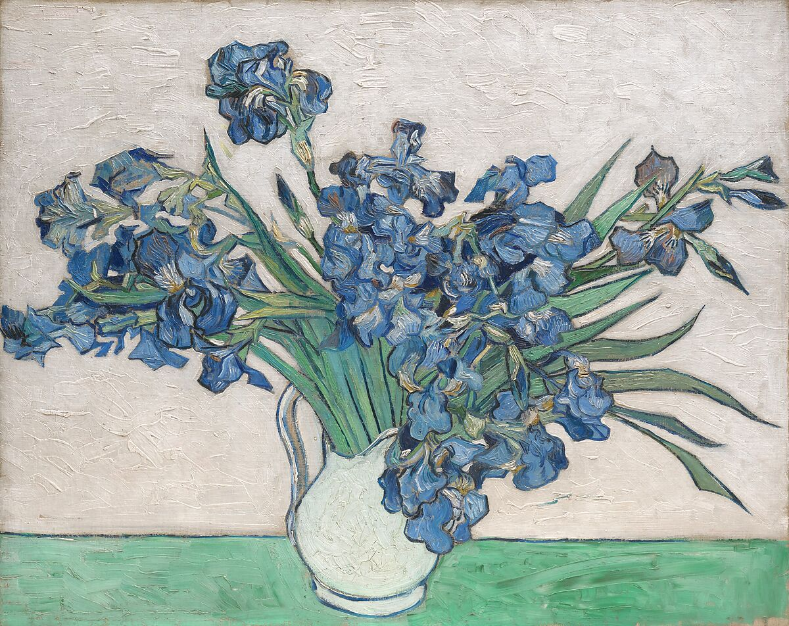
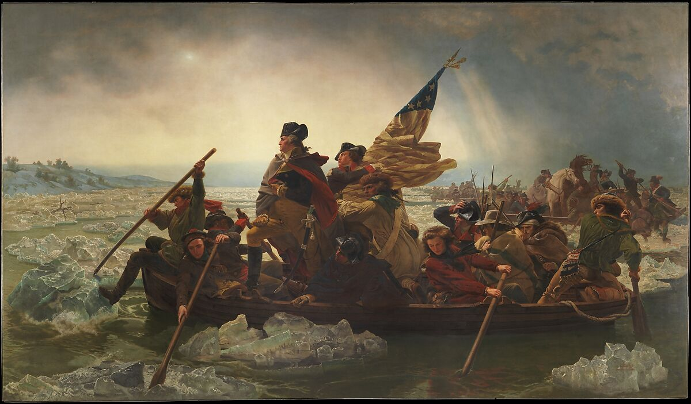

MUST SEE AT THE MET

Madonna and Child
Benvenuto di Giovanni, ca. 1470

Suit, House of Chanel
Gabrielle Chanel, Spring/Summer 1963

Bridge over a Pond of Water Lilies
Claude Monet, 1899

Cow's Skull: Red, White, and Blue
Georgia O'Keeffe, 1931

Self-Portrait
Rembrandt (Rembrandt van Rijn), 1660

The Temple of Dendur
Roman Period, completed by 10 B.C.

From My Window at An American Place, Southwest
Alfred Stieglitz, 1932

Gray Weather, Grande Jatte
Georges Seurat, ca. 1886–88

Irises
Vincent van Gogh, 1890

Washington Crossing the Delaware
Emanuel Leutze, 1851